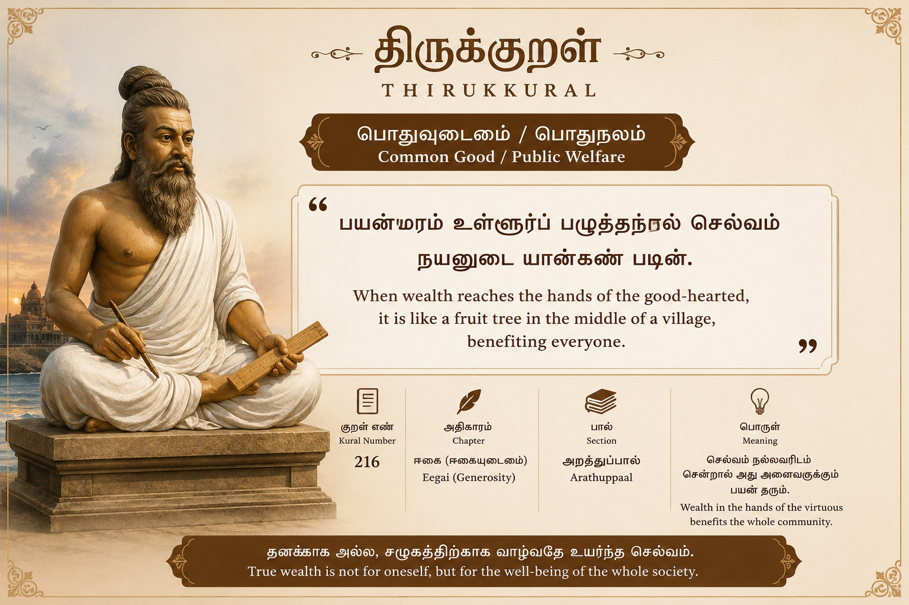

திருக்குறள் + AI
Thirukural GPT
திருக்குறளை எளிய தமிழ் மற்றும் ஆங்கிலத்தில் விளக்கும் AI உதவியாளர். அறம், பொருள், இன்பம் ஆகியவற்றை இன்றைய வாழ்க்கையுடன் இணைக்கிறது.

பொதுவுடைமை / பொதுநலம் குறள்
பயன்மரம் உள்ளூர்ப் பழுத்தற்றால் செல்வம்
நயனுடை யான்கண் படின்.
எளிய பொருள்: நல்ல மனம் கொண்டவரிடம் செல்வம் சென்றால், அது ஊரின் நடுவில் பழுத்த மரம் போல அனைவருக்கும் பயன் தரும்.
English: Wealth in the hands of a virtuous person becomes useful to the whole community, like a fruit-bearing tree in the middle of a village.